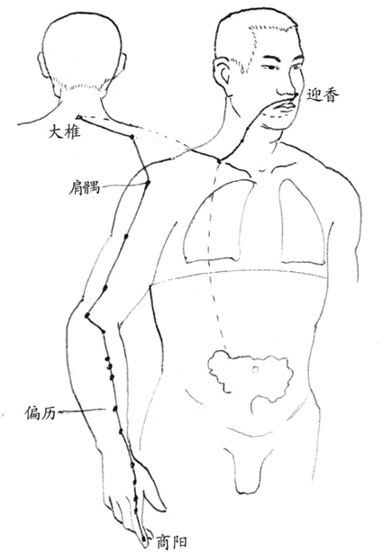
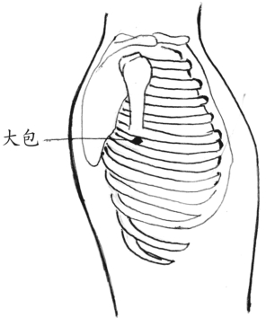
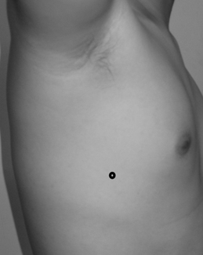
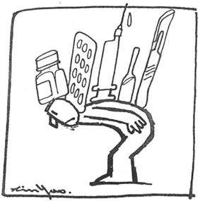

第五章 病和症
第一次真正和中医的接触是由于我的牙龈经常发炎，牙齿浮起来，医生认为是牙周病，长期治疗也没什么效果，于是建议我找中医试试。朋友介绍了一个很好的中医师，他一看就说我的问题出在大肠，而且我的血气太差才会如此。只要养好血气再治好大肠就能够解决问题，后来我乖乖地早睡早起养血气，一个月后牙齿就不再痛了，至今多年来，牙龈没有再发过炎。
这个例子最能说明病和症的关系，牙龈发炎是症，血气和大肠才是真正的病。“症现于四肢五官，病存于五脏六腑”，是中医最基本的道理。
“辨证论治”是中医断病的一个基本方法，医生依据病人的症状以及自己对医学的理解和经验，用推理的方法寻求疾病的根本原因，再就病因拟定治疗的方法。由于中医不像西医单就症状治病，必须追根究底地推论疾病真正的原因。
通常疾病的原因有好几层。再以坐骨神经痛为例，患者经常是一条腿麻或抽痛，从中医的观点，首先必须了解病人疼痛部位和经络的关系，通常这种疼痛的部位多半位于胆经，因此可以判断是胆经痛。也就是不舒服的原因是胆经引起的，但这并不是最根本的原因，通常胆经的疼痛是源自于肺经，是肺热引起的，也就是胆经的问题是第一层原因，肺热则是第二层原因。而肺热的形成则由于身体原本存在着寒气，当身体的能量足以排除寒气时，会使身体呈现肺热的状态。因此，寒气才是更里层的原因。这个例子中，腿麻或抽痛是“症”，肺里的寒气才是“病”。疾病的诊断必须经过这样一层一层的推理和分析，才能找出治疗的方法，这就是所谓的“辨证论治”。
疾病的诊断必须经过这样一层一层的推理和分析，才能找出治疗的方法，这就是所谓的“辨证论治”。
病和症的关系
在前一章寒气的理论中，虽然寒气的症状会在身体各个部位出现，但医生在辨证论治的过程中，必须清楚身体排除的是哪一个脏腑的寒气。好的医生必须有能力从患者四肢五官的症状，读出在五脏六腑里的病，治疗时对“症”下药，不如对“病”下药来得有效。
这类例子不胜枚举，例如，一个鼻咽癌患者，其病因却是来自他早期曾经得过严重的肠胃感染。颈部是大肠经（图九）经过的部位，这条经络由于大肠的问题而堆积了许多废物，患者多半颈部粗大，从西医的“头痛医头，脚痛医脚”逻辑来看，这些废物长在咽喉附近，就定为鼻咽癌。也始终在鼻咽附近寻找可能的病因，通常都将之归咎于抽烟引起的疾病，如果患者不抽烟，就将之归类为二手烟的危害。其实癌症出现的部位是肠胃问题的结果，原因根本不在那里。就算把那些癌症的物质全数割除，对于原因一点也没有影响，如果患者在手术后并不改变其生活习惯，肠胃的问题得不到改善，疾病在不久之后还是会复发的。
多数慢性病，是我们错用了身体的结果。我们需要的，不是灵丹妙药，而是一本正确的人体使用手册。

图九 大肠经
肠胃感染有可能演化成各式各样的疾病。
肠胃感染有可能演化成各式各样的疾病，如牙周病、过敏性鼻炎、鼻咽癌、肌无力、哮喘、粉刺等等。曾经有一个病例，是一个患了红斑狼疮的小女孩，追根究底查下来，她的原始病因很可能是吃了大量生的黄泥螺。最奇特的是两个精神病患者，居然也是起因于肠胃感染。
这些人除了记得多年前得过肠胃病以外，平常从来没有肠胃不舒适的感觉，有的甚至从来不拉肚子，每个人都认为自己肠胃很好。
有几个肺腺癌的患者，进行透视摄影时，在肺部会出现阴影，显示这些阴影的部位存在着异物，可是这些异物又不在肺脏内部，因此西医就将之定名为肺腺癌。
从中医的观点，在肺的外部两侧腋下的部位是脾经大包穴（图十）的部位。从中医的医理对于这些异物的判断是当脾胃中有病变时，经络上的新陈代谢较差，容易堆积垃圾，时间长了就形成肿瘤，也就是影像中的阴影。这些肿瘤虽然长在肺的位置，但是并没有长在肺的里面，而是长在脾的经络上，从中医的观点，应该是脾胃的疾病。因此，正确的对策应该是针对脾胃进行治疗，而不是在肺的问题上打转。
多数慢性病，是我们错用了身体的结果。我们需要的，不是灵丹妙药，而是一本正确的人体使用手册。

图十 大包穴在侧胸部，腋中线上，第六根肋骨间隙处

其实这些垃圾在人体到处堆积着，有些堆在身上，有些则堆在脸上。例如，耳朵前方偏下脸颊特别厚的人，则是小肠经的堆积。肺癌例子中的垃圾，只是堆到了重要器官的附近，经过医生的误判，就成了重病。
一个皮肤癌的患者，病灶在脸上生长的部位是胃和大肠经经过的部位，在调理的过程中，大肠经经过的手臂和小腿部位，经常出现发热、发红、发痒的症状。过去也曾出现过这些症状，医生都将之判定为过敏性皮肤炎，可是却没有任何药物可以医治，每次发作很痒时，只能忍耐着等其结束。当肠胃的病灶控制住了之后，新的癌变就不再长出来，再过一段时间，旧的癌变也跟着掉了下来。
提到症状时，多数人都会想到一些如打喷嚏、流鼻水、皮肤痒、局部疼痛、长出异物或者严重的吐血、昏倒等身体上的明显变化。其实各个脏腑中发生病变时，其相应的经络也会出现各种症状，多数的症状都是没有感觉，例如前面例子中的肺腺癌和皮肤癌的症状，只是在身体里堆积了垃圾，患者并没有任何不舒服的感觉。
实际上人体内脏的疾病，在外表都存在着各种症状，一个好的医生必须具备从患者的各种细微症状中读出完整的健康状况的能力。

现代医学最大的问题是：低估了人体自身的智慧，高估了人类知识的能力。
现代医学低估了人体的智慧
从中医的观点所看到的人体，是一个充满智慧的机体，长期以来，我们一直低估了人体的智慧，高估了我们自己的知识。经常在没有弄清楚人体在做什么，就判定了它的无能，随即我们用一知半解的知识贸然地进行干预，今日的许多疾病很可能是这些不当的干预行为所造成的后果。
拜现代科技之赐，中医最新的医学研究逐渐使其理论显现出科学的面貌，原来我们祖先的遗产并不是不科学，只是过去我们的科技能力无法证实而已。我们坚信随着这些研究的进一步发展，有机会开创出基因研究以外，解决众多慢性病的一条更有机会的新路。
人体内建的诊断维修系统，并不仅仅是西医所说狭义的免疫能力，而是包含自我诊断、人体资源管理、自我修复及再生的完整医疗体系，这些系统工作的最基本条件就是必须具备足够的血气能量。
既然人体内建了自己的医疗体系，当我们生病时，应该先考虑让体内的系统正常工作，而不是从外界直接介入调整，我们必须认知人体这些机能的存在，并能判别人体正在进行哪一种应变措施，以及它需要我们提供的是什么样的协助。
对于疾病的症状，应该从狭义的不舒服症状扩大到那些没有感觉的症状。并且对于不舒服的疾病症状所寻求的也不应该是直接消除这些症状，而是透过这些症状找出疾病的真正原因，彻底消除疾病的原因才是治疗的最终目的。